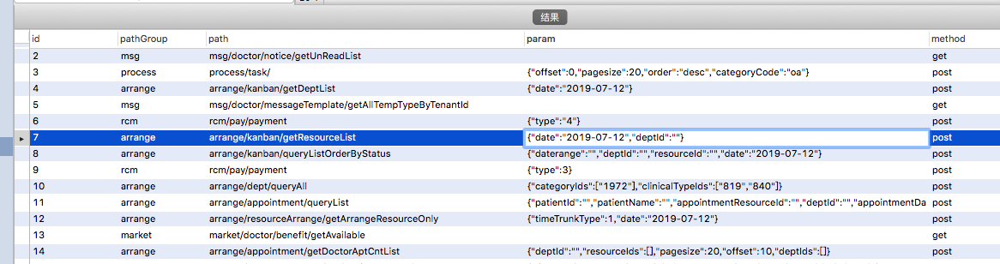
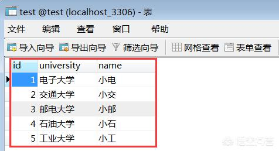
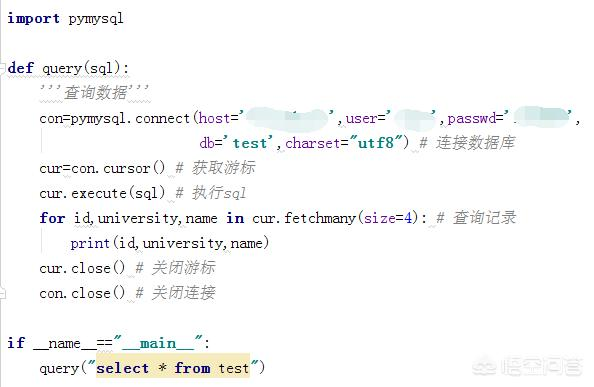
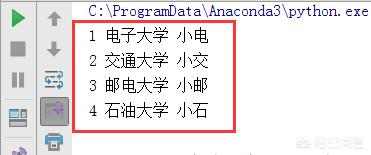

一. 从数据库中读取全部接口，并写入yaml文件
数据库中的数据存储格式如下图：

import pymysql
import os
import json
# from ruamel import yaml
import yaml
#第一步：从数据库中取出所有接口记录存成一个字典
def query(sql):
con=pymysql.connect(host='192.168.249.152',user='root',password='123456',db='test_api',charset='utf8')#连接数据库
cur=con.cursor()#获取游标
cur.execute(sql)#执行sql
list = []
for id,pathGroup,path,param,method in cur.fetchall():#查询记录，fetchall用法参见注释1
ever = {
'pathgroup': pathGroup,
'path': path,
'param': param if param == '' else json.loads(param),
'method': method
} #将每一个接口形成一个字典格式，param如果写成'param':param的话会有坑（坑1）
#print(ever)
list.append(ever)#将每一个接口字典变成列表元素 坑2
result={'content':list} #再变成一个大字典存起来，为了后面写入yaml文件的是一个字典
cur.close()
con.close()
return result #返回大字典
#第二步：写入yaml文件
result_yaml=query('select * from t_api')#调用接口将返回的所有数据存起来（参数为查询数据库所有数据）
print(result_yaml)#打印出来看看
a=os.path.dirname(os.path.realpath(__file__))#os.path.dirname返回目录，os.path.realpath返回绝对路径
print('a===',a)
yamlpath=os.path.join(a,'testcase.yaml')#os.path.join拼接出yaml文件的路径
with open(yamlpath,'w',encoding='utf-8') as f:#w是写入文件，先删除原文件，再重新创建并写入
yaml.dump(result_yaml,f)#yaml.dump把生成的yaml文档写到文件里，yaml.dump接收的第二个参数一定要是一个文本文件或二进制文件
# if __name__=='__main__':
# query('select * from t_api')注释1：
为了方便演示，我这里新建了一个test数据表，有id,university,name这3个字段，主要内容如下：

查询数据，这里主要用到fetchall、fetchone、fetchamany这3个函数，其中fetchall是查询满足条件的所有记录，fetchone是查询满足条件的第一条记录，fetchamany是自定义查询满足条件的记录，测试代码如下：

程序运行截图如下，已经成功查询出4条记录：

坑1：
这里的param需要写成：'param': param if param == '' else json.loads(param)，param如果写成'param':param的话输出的结果就是
{'pathgroup': 'arrange', 'path': 'arrange/kanban/getDeptList', 'param': '{'date': '2019-07-12'}', 'method': 'post'} ，param的value变成了字符串，这样的话写入到yaml文件也是个字符串，在后续解析yaml文件的时候不能解析，这里的value必须是个字典格式，
所以写成了json.loads(param),意思是将字符串转换成字典格式
坑2：
这里最开始写成了：a=list.append(ever),这样写是错误的，list.append()直接写就行不需要前面加个变量